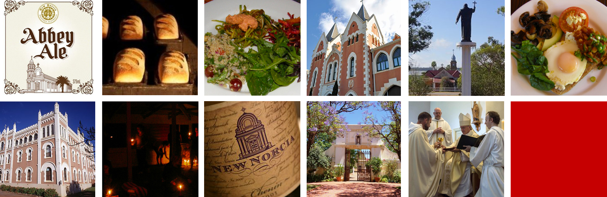

Online Live Streamed Yoga Classes
Online Pre Recorded Yoga Classes
Online Pre Recorded Meditation Course
Busselton Classes
Corporate
Retreats
Shop
Media


Retreats - Weekend Retreat
New Norcia - A place of spiritual retreat
Join us for a weekend in the magical setting of New Norcia – a place for spiritual retreat. New Norcia is Australia's only monastic town. It is a memorable and mesmerising place that will not disappoint. Over the weekend you'll have the opportunity to immerse yourself in the practice of yoga including asanas (yoga postures), pranayama (breathing techniques), dharana (concentration) and dhyana (meditation) and spend quality time with the retreat group. You'll also have the opportunity to delve into the world of fermentation during the cooking classes and learn more about the history of New Norcia with a town tour.
Founded in 1847 by Spanish Benedictine Monks, New Norcia has had many purposes: a mission, a monastery, a provider of education, and now as a place of spiritual retreat. The Monastery, where the monks live, work and pray, is at the heart of New Norcia. The monks of New Norcia live according to the guidance and rhythms of The Rule of St Benedict, which has been followed by monks since the sixth century AD. Monks who do so are referred to as 'Benedictines'. Unlike many priests and nuns, monks do not join an 'order' as such, but instead join an autonomous monastery where they promise to remain for the rest of their lives.
Up Coming Retreats
Included in the Retreat
Yoga & Meditation
Find freedom and ease in your body and mind with four yoga classes and three guided meditation. These classes are designed by KatieYoga teachers to leave you feeling energised, focused and balanced. You will experience alignment-focused yoga interweaved with yogic philosophy and teachings. KatieYoga classes are structured around specific learning objectives to enhance your experience, and deepen your yoga practice and knowledge.
Meditation
Cultivate inner peace and calm though guided meditations.
Vegetarian Cuisine
Enjoy delicious and moorish vegetarian cuisine from our friends at Mana Juice (Mana means spirit) who are passionate about health and wellness.
Accommodation
The Old Convent is a courtyard complex. Originally the home of Spanish Benedictine Sisters, the building is full of character and atmosphere and memories stretching back over 100 years. Accommodation includes a variety of twin share or four beds to a room.
Options
Cooking Class
Be inspired in the kitchen, learn about the wonderful world of fermenting. You will get to take home 375ml of sauerkraut and a 2L kombucha brew.
Town Tour
Take a 2 hour trip around the town and unravel the unique history, architecture and artwork of New Norcia. This tour includes entry to the Museum which contains Mission and Monastery memorabilia, European Religious Artworks and Contemporary Australian Art works, as well as historical exhibitions.
How to Register
Click here to register your interest for the retreat.
Approximate Schedule
Friday
4:00 Check In
5:00 Yoga Session
7:00 Dinner
8:00 Welcome & Meditation
8:45 The Grand Silence
Saturday
6:30 Morning Health Tonic
7:00 Yoga
9:00 Breakfast
9:30 Options / Freetime
1:00 Lunch
1:30 Options / Freetime
5:00 Yoga
7:00 Dinner
8:00 Meditation
8:45 The Grand Silence
Sunday
6:30 Morning Health Tonic
7:00 Yoga
9:00 Snack
9:30 Meditation
10:00 Brunch
11:00 Goodbyes
12:00 Check Out
Schedule may be
subject to change.